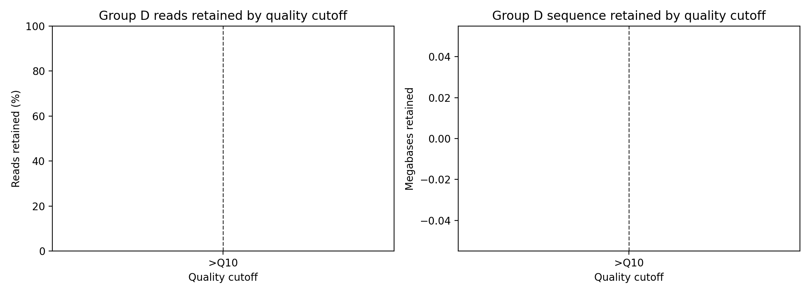
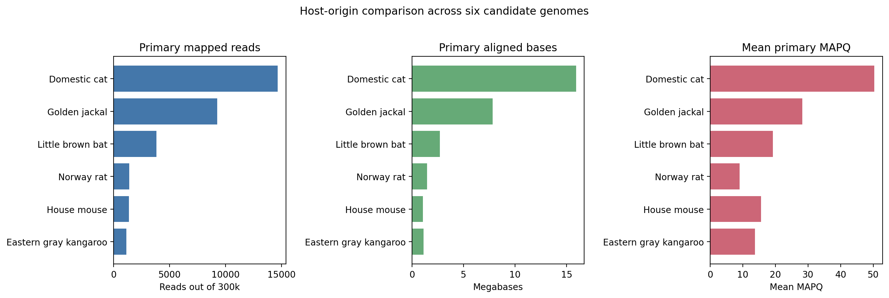
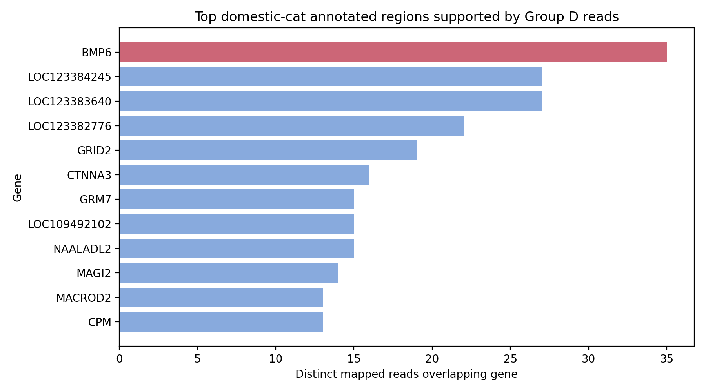
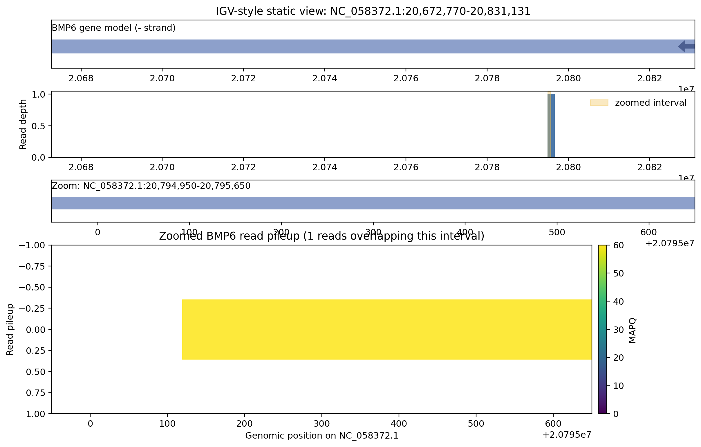
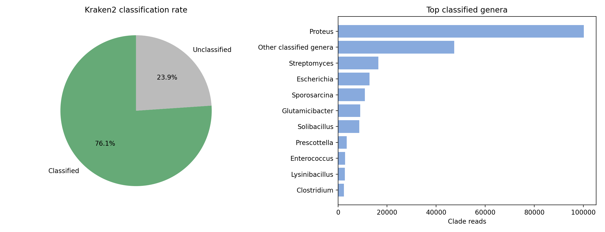
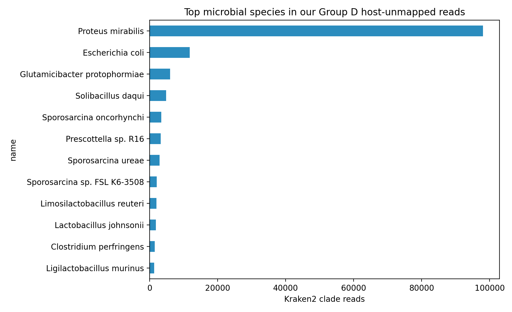
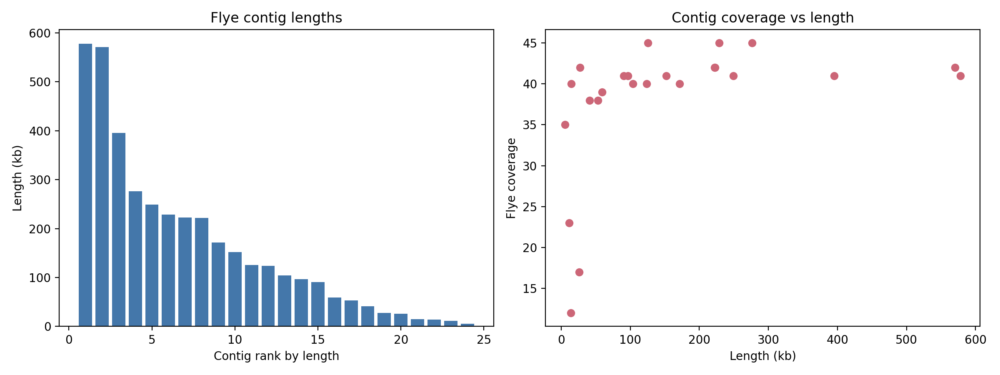
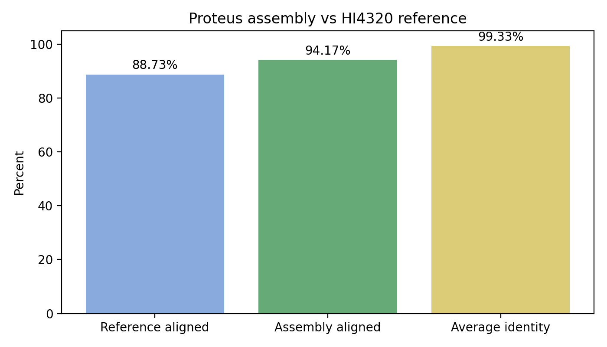

Executive summary
The report uses a curated subset of outputs suitable for GitHub Pages. Large raw data, reference genomes, BAMs, Kraken databases, and secrets remain local and are intentionally excluded from publication.
1. Sequencing QC and filtering
Group D produced 1,803,479 reads and 1,978,672,910 bases in the NanoComp summary. The chosen Q10 and length >= 500 bp filtering rule keeps most usable sequence while removing the weakest and shortest reads. Stricter Q15/Q20 thresholds were considered, but they discard a much larger fraction of reads and bases.

2. Comparative host-origin assessment
Filtered long reads were aligned against six candidate host genomes. We used minimap2 -x map-ont because the data are Oxford Nanopore reads and minimap2 is fast, standard, and produces compact PAF summaries. Alternatives such as bwa mem, BLAST, GraphMap, and k-mer classification were less appropriate for this long-read, multi-genome comparison.

| Candidate | Primary mapped reads | Aligned bases | Mean MAPQ |
|---|---|---|---|
| Domestic cat | 14,669 | 15,916,983 | 50.34 |
| Golden jackal | 9,251 | 7,818,568 | 28.25 |
| Little brown bat | 3,818 | 2,698,838 | 19.20 |
3. Functional region in the host genome
After choosing domestic cat as the host, the domestic-cat BAM was intersected with the NCBI GFF gene annotation. This direct read-to-gene overlap is a better fit here than full variant calling or gene-expression analysis because the data are mixed-origin genomic long reads, not controlled host variant or RNA-seq data.


4. Microbiome exploration
Host-unmapped reads were classified with Kraken2 using a compact public database. Kraken2 was chosen over Centrifuge, MetaPhlAn, Kaiju, and BLAST/DIAMOND-style approaches because it is fast, has suitable public databases, and keeps read-level assignments that can be used to extract reads for assembly. MetaPhlAn would be strong for marker-based profiling, but it does not naturally provide all species-assigned reads for assembly.


| Species | Percent | Clade reads |
|---|---|---|
| Proteus mirabilis | 34.35 | 98,025 |
| Escherichia coli | 4.13 | 11,794 |
| Glutamicibacter protophormiae | 2.11 | 6,029 |
5. Species assembly and reference comparison
Proteus mirabilis was selected for assembly because it was the dominant classified species and has public reference genomes. Reads assigned to the species taxid and observed child strain taxids were assembled with Flye. Flye was chosen over Canu, Raven, Shasta, wtdbg2, and short-read assemblers because it is widely used for noisy ONT reads and is practical for this notebook workflow.


dnadiff was chosen because it reports direct reference alignment coverage, identity, SNPs, and indels. QUAST/metaQUAST, Mash/ANI, minimap2 summaries, and CheckM/BUSCO-style completeness checks are reasonable additions, but dnadiff directly answers the assignment's reference-comparison requirement.
6. Reproducibility and notebooks
The full analysis notebooks include the executable workflow, skip-if-present logic, tool alternatives, and the final conclusions. The Colab copy is prepared for a Google Drive-style root and can install command-line dependencies in a fresh runtime.